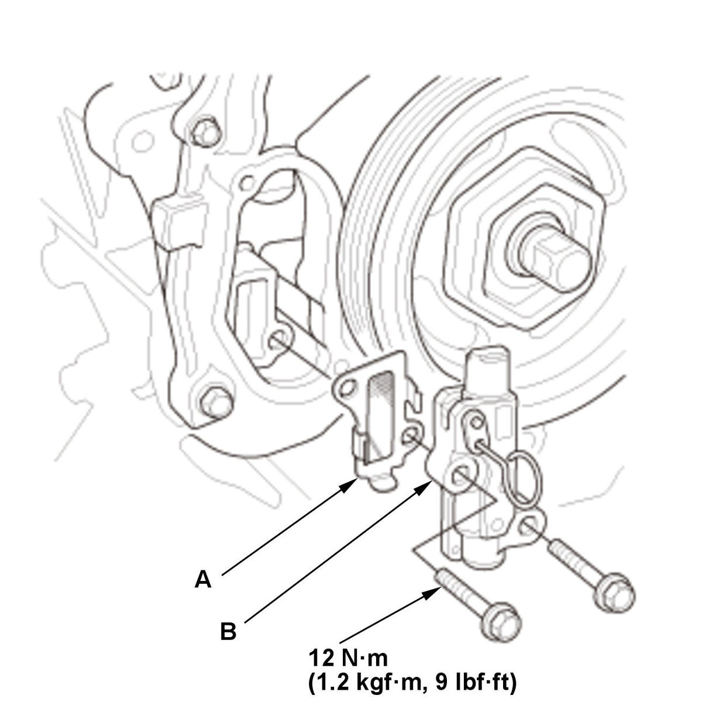
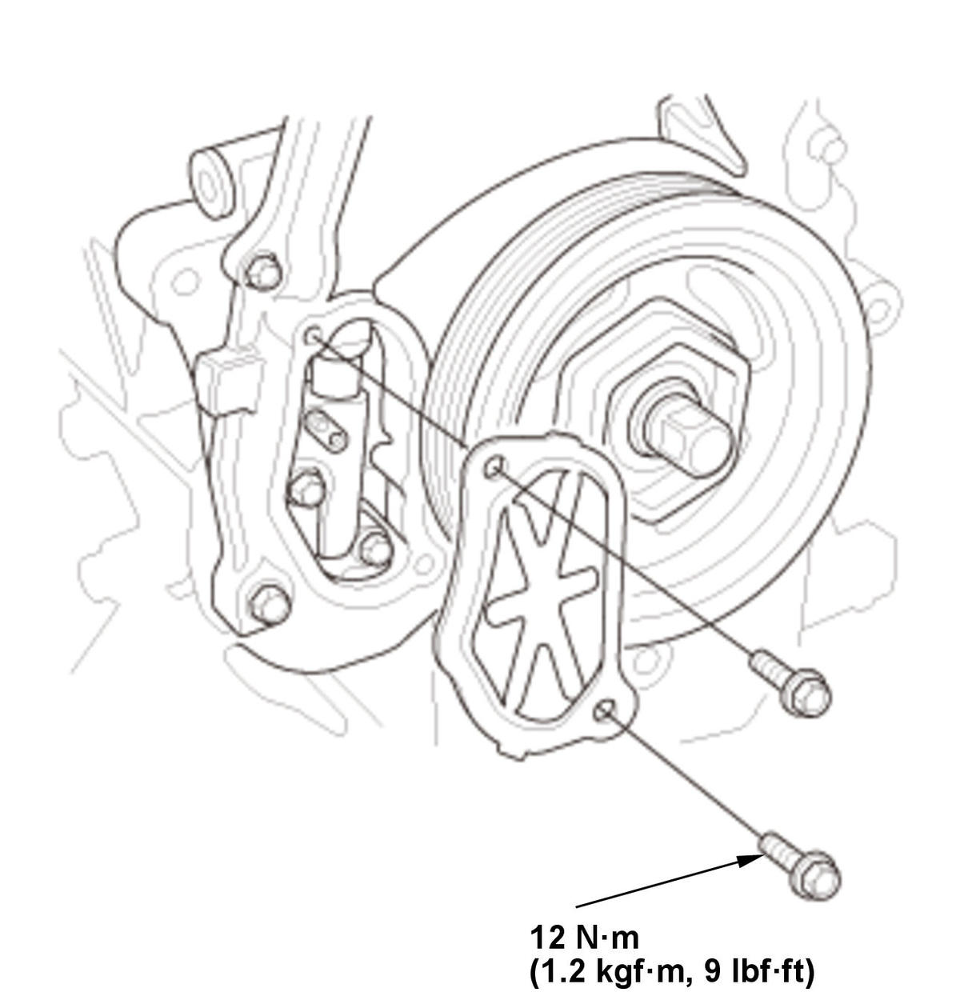

Cam Chain Auto-Tensioner Removal and Installation (L15B7): Installation
- Cam Chain Auto-Tensioner - Install
1. Compress the cam chain auto-tensioner when replacing the cam chain. Remove the pin (A) from the cam chain auto-tensioner that was installed during removal. Turn the plate (B) counterclockwise, to release the lock, then press the rod (C), and set the first cam (D) to the first edge of the rack (E). Insert the 1.2 mm (3/64 in) diameter pin back into the holes (F).
NOTE: If the cam chain auto-tensioner is not set up as described, the cam chain auto-tensioner will be damaged.
Courtesy of HONDA, U.S.A., INC.2. Install the cam chain auto-tensioner filter (A) and the cam chain auto-tensioner (B). 3. Remove the pin (A) from the cam chain auto-tensioner. - Chain Case Cover - Install

Courtesy of HONDA, U.S.A., INC.1. Apply liquid gasket to the cam chain case mating surface of the chain case cover, and to the inside edge of the threaded bolt holes. 2. Install the chain case cover.
- Engine Undercover - Install
- Right Front Wheel - Install